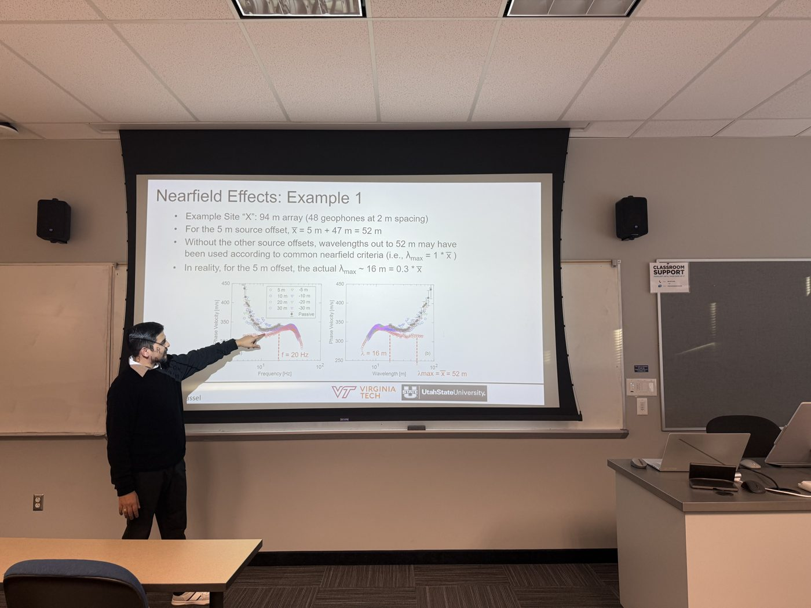

Education
- 2021–present
Ph.D., Civil and Environmental Engineering (Geotechnical)
Utah State University
Dissertation: Multi-Dimensional Site Response Analysis at Downhole Array Sites. Advisor: Dr. Brady R. Cox.
- 2020
M.S., Geotechnical Engineering
Tribhuvan University, Nepal
Thesis on support design for the Upper Balephi ‘A’ tunnel using 3D numerical methods. Graduated with distinction.
- 2016
B.S., Civil Engineering
Tribhuvan University, Nepal
Teaching

- USU
Instructor, CEE 6340: In-Situ Site Characterization
Taught the course during the lead instructor's absence
- USU
Guest Lecturer, CEE 6930: Numerical Methods
Numerical damping formulations for site response in FLAC3D
Research & professional
- 2021–present
Graduate Research Assistant
Utah State University
Multi-dimensional site response modeling, site characterization, and industry-sponsored deep Vs profiling for nuclear and transportation projects.
- 2020–2021
Geotechnical Engineer
Easy Technical Services, Kathmandu
Site investigations and geotechnical reports for roadway and foundation projects.
- 2018–2019
Civil Engineer
National Reconstruction Authority, Government of Nepal
Inspected reconstruction of 400+ houses after the 2015 Gorkha earthquake and led community programs on earthquake-resistant building.
Awards
- Graduate Enhancement Scholarship, Utah State University, 2026
- Graduate Student Travel Award, Utah State University, 2026
- Merit-based scholarships, Tribhuvan University (ranked 84 of 1,200 for M.S.; 278 of 13,000 for B.S.)
Service & memberships

- President (2024–25) and Inaugural Secretary (2022–23), EERI Student Chapter, Utah State University
- Member of EERI, ASCE, Nepal Geotechnical Society, and Nepal Engineers' Association
- Registered Engineer, Nepal Engineering Council